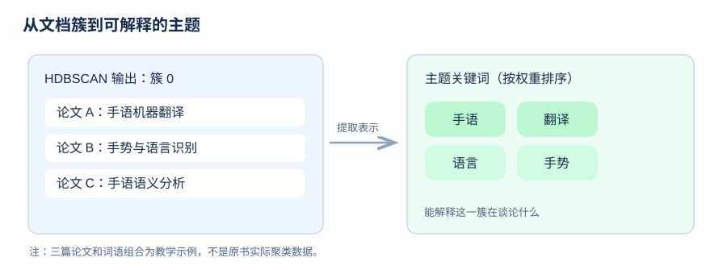
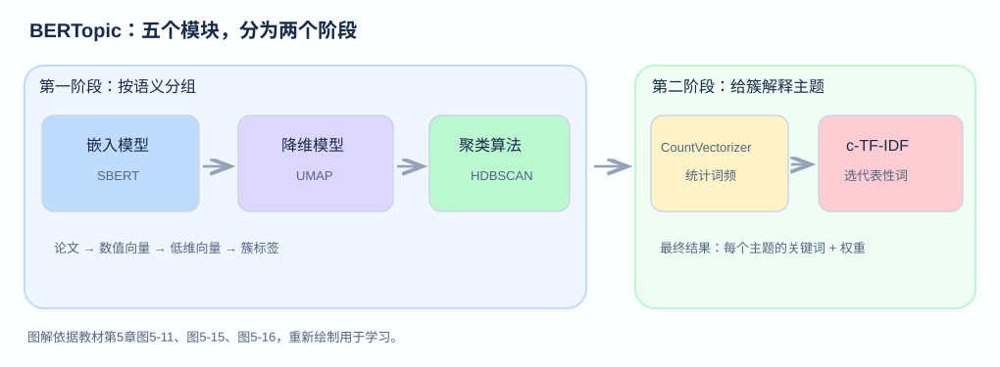
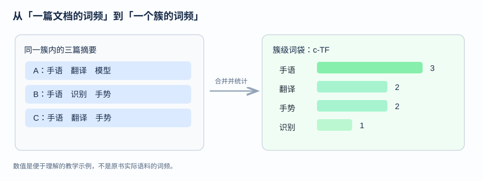
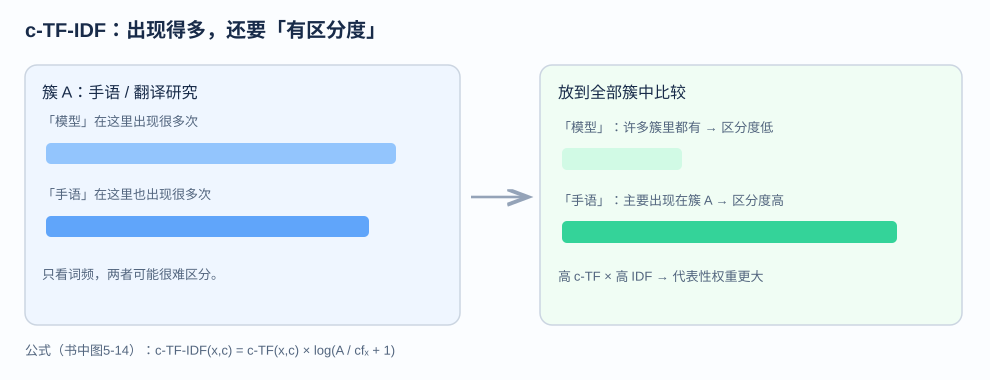
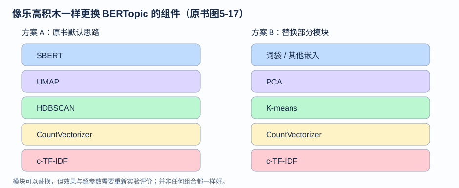

《图解大模型》 · 5.3—5.3.1
原书第122—128页，图5-9至图5-17Day 5 的 HDBSCAN 为相似的论文生成簇0、簇1等标签，但数字无法解释每组文档具体讨论什么。原书在第122页以手语翻译相关文档为例：我们不仅希望找到一组类似的论文，还希望用“手势”“语言”“翻译”等关键词描述该组的主题。
原书用宠物、食物和体育的文档组演示主题表示：宠物组的词可能是 dog、cat、pet；食物组是 pasta、pizza、cooking；体育组是 soccer、basketball、athletes。不同主题中的词具有不同权重，权重较高的词更能代表对应主题。
经典主题模型如 LDA 往往通过词袋等方法统计词语分布；本章先利用 Transformer 嵌入向量进行语义聚类，再结合词袋统计和词语加权建立主题表示。两者各自解决不同的问题。
这是原书第126页图5-16的主线。第一部分从语义角度把文章分组，第二部分从词语统计角度提取每组的代表词。书中强调 BERTopic 的模块化优势，前面使用的嵌入、降维或聚类算法都可以替换。
嵌入向量能够帮助机器理解文档之间的语义相似性，但384维或5维向量通常不会直接告诉我们哪一维代表“翻译”。因此原书引入词袋：使用 CountVectorizer 来统计词语出现的次数。
原书图5-12先说明文档级词频，图5-13进一步指出：主题建模应该统计整个簇中的词，而不仅是一篇文章中的词。
| 示意文档 | 内容 |
|---|---|
| 文章A | 手语 翻译 模型 |
| 文章B | 手语 识别 手势 |
| 文章C | 手语 翻译 手势 |
把这三篇当成同一个簇来统计，“手语”出现3次，“翻译”出现2次，“手势”出现2次。这个小例子是辅助理解，并非书中真实数据。
原书第125页指出，the、I等停用词在大量文档中很常见，但通常不具有鲜明的主题意义。c-TF-IDF通过两个信息计算词权重：一个词在当前簇中出现得多不多，以及它是否也广泛出现在其他簇中。
原书图5-14的IDF部分为：
IDF(x) = log(A / cf_x + 1)其中 A 表示所有簇中的平均词语数量，cf_x 表示词 x 在所有簇中的总频次，log使用自然对数。再与该词在当前簇中的c-TF相乘：
c-TF-IDF(x,c) = c-TF(x,c) × log(A / cf_x + 1)最终为每个簇中的词排序，选取权重较高的词构成主题表示。这里的权重并不是分类正确率，也不是注意力权重。
from bertopic import BERTopic
topic_model = BERTopic(
embedding_model=embedding_model,
umap_model=umap_model,
hdbscan_model=hdbscan_model,
verbose=True
).fit(abstracts, embeddings)
topic_model.get_topic_info()上述代码复用此前准备好的嵌入模型、UMAP模型、HDBSCAN模型和论文摘要。fit(abstracts, embeddings) 执行主题建模流程，get_topic_info() 输出主题概览。
| Topic | Count | 书中主题关键词示例 |
|---|---|---|
| -1 | 14520 | the, of, and, to... |
| 0 | 2290 | speech, asr, recognition... |
| 1 | 1403 | medical, clinical, biomedical... |
| 2 | 1156 | sentiment, aspect, analysis... |
| 3 | 986 | translation, nmt, machine... |
topic_model.get_topic(0)
[
('speech', 0.028177697715245358),
('asr', 0.018971184497453525),
('recognition', 0.013457745472471012),
('end', 0.00980445092749381),
('acoustic', 0.009452082794507863)
]输出的每个元素都包含一个词和它在该主题中的代表性权重。例如“speech”对应的数字说明它对主题0的表示有多重要，而不是“这篇文章属于主题0的概率”。
完整流程：文档嵌入 → 降维 → 语义聚类 → 统计簇内词频 → c-TF-IDF加权 → 主题关键词。
这种设计有一个优势：我们可以替换其中的不同模块，而不必从零设计整个主题建模系统。原书用“乐高积木”形容这种模块化。
语义嵌入主要用于发现相似文档，词频加权用于提取人可以理解的主题关键词。
一些词在所有主题中都非常常见，缺乏区分度。c-TF-IDF会考虑词在全体簇中的频次。
第一部分嵌入、降维、聚类；第二部分CountVectorizer词频统计和c-TF-IDF加权。
不是，是词在对应主题中的表示权重。
这一节只需要抓住一条主线：以前我们能把论文分成组，现在要让每组有一个人能理解的“主题说明”。建议先看图、再读例子，最后把同样的关系对应到书中代码和输出。下面不仅解释结论，也解释为什么要这样做、输入输出分别是什么。

假如簇0有100篇论文，聚类算法可以告诉我们这100篇属于同一组，却不会自动把组名写成“手语研究”。主题建模希望计算一组具有较高代表性的词，比如“手语”“翻译”“手势”，让人看到关键词就能理解研究方向。
在图5-10中，词表里的每个词都可以对不同主题有不同的重要程度。比如“dog”对宠物主题重要，对烹饪主题通常不重要。这也是后面需要给词计算权重的原因。

输入是一篇篇论文摘要，例如“研究手语翻译系统”；输出是数值向量，例如书中之前使用 gte-small 得到384维表示。嵌入向量的作用是编码语义相似性，而不是直接输出关键词。这就是前面 Day 3 的内容。
把384维语义向量映射到更低维空间，帮助后续聚类。在本章的示例中，之前设置 n_components=5。这里没有删除文章；文章数量不变，变化的是每篇论文的特征维度。
依据降维后的向量分布进行聚类，得到每篇论文的组别。对无法稳定归组的文档，可以给出 -1 标签。这时已经知道“谁和谁是一组”，但还不知道每组应该用哪些关键词表示。
现在暂时放下嵌入向量，回到原始论文的文本内容。统计各个词出现多少次。之所以需要这一步，是因为最终我们希望输出“翻译、手语、手势”等词语，而不是一串384维浮点数。
仅按出现次数挑词会受到英语停用词及其他高频通用词的影响，因此需要计算某个词在当前组中有没有区分度。最后对每组关键词按照权重排序。

先看普通词袋。如果有两句话：My cat is cute 和 That is a cute dog，可以建立词表 cat、dog、cute、is...，记录每篇文本中每个词的出现次数。这相当于把自然语言转换为一个词频表。
但我们现在不关心“单篇论文里哪个词最多”，而是关心“整个主题簇最有代表性的词”。因此 BERTopic 会把同一个簇中的文档合并看作一个大文档，再统计该簇的词频。原书将这一部分称为 class-based TF，即 c-TF。
[1,0,2,0,...]；一个簇的词袋可以理解为该簇多篇文本的词频合并结果。这里的“class”指聚类产生的分组，不是提前由人工标注的分类标签。
看两个词：model 可能在计算机科学所有方向的论文里都很多；sign language 则可能集中出现在手语翻译相关簇中。即使二者在这个簇内都常见，“sign language”一般更能向读者指出这个簇的特色。
书中写出的逆文档频率部分为：
cfₓ 是词 x 在所有簇中的总频次，A 是书中定义的所有簇平均词数。书中说明对数为自然对数。再与簇内的 c-TF 相乘，得到该词在某簇的 c-TF-IDF 权重。
为了理解公式，假设 A=10，词“手语”在全部簇中只出现1次，而词“模型”在全部簇中出现10次，则：
如果暂且假设这两个词在当前簇的 c-TF 都为同一个值，那么“手语”对应的权重会更大。这正是 IDF 想表达的：在全体簇中不那么普遍的词，通常更有主题区分度。这里固定相同 c-TF 只是用来单独观察 IDF 的作用，并不是对原书数据做了真实计算。

比如你觉得 UMAP 不适合当前数据，可以尝试 PCA；不希望出现大量离群点时，可以考虑使用 K-means 聚类。主题表示部分也可以单独调整。它们是不同阶段的组件，不意味着任意拼接都会得到同样的好效果，而是可以单独实验、单独替换。
from bertopic import BERTopic
topic_model = BERTopic(
embedding_model=embedding_model,
umap_model=umap_model,
hdbscan_model=hdbscan_model,
verbose=True
).fit(abstracts, embeddings)
topic_model.get_topic_info()| 语句 | 实际做了什么 | 常见误解 |
|---|---|---|
BERTopic(...) | 组装主题建模流程；传入已经定义好的组件 | 不是重新定义Transformer的每一层 |
embedding_model=... | 指定用于获取语义嵌入的模型 | 不是将词频统计替换为嵌入 |
umap_model=... | 指定降维算法实例 | 不是控制主题数量 |
hdbscan_model=... | 指定聚类模型实例 | 不是词语加权模型 |
.fit(abstracts, embeddings) | 用摘要及已有嵌入运行主题模型拟合 | 不代表重新训练预训练语言模型的参数 |
get_topic_info() | 得到主题编号、文档数及关键词概览 | 并不是预测一篇新论文的类别 |
原书第128页显示 Topic=-1 的 Count=14520，表示这些论文没被分入常规主题；Topic=0 的 Count=2290，关键词包含 speech、asr、recognition，很容易看出主要与语音识别方向有关。
再调用 get_topic(0)，返回的是类似 ('speech', 0.028177...) 的词—权重配对。第二个数字是主题表示中的词权重，不是“这篇论文属于这个主题的概率”。
Day 3：输入44,949篇摘要，得到44,949个384维语义向量。
Day 4：UMAP把每篇的384维向量压缩为5维，方便聚类。
Day 5：HDBSCAN根据5维向量分布生成文档簇，允许离群点。
Day 6：CountVectorizer合并统计每个簇的词频，c-TF-IDF提取代表性关键词，使簇拥有可理解的主题表示。
嵌入向量的每个维度一般不是一个可以直接命名的词语。为了得到能读懂的主题关键词，BERTopic在聚类后还需要对原始文本做词频统计和词语加权。
可能。因为词语在全体簇中的常见程度不同。只看一个簇中的出现次数不够，还要考虑全局频次。不过最终权重仍取决于完整的 c-TF-IDF 计算，不能只凭这两个数字断言。
在本书展示的这套常规流程中，它主要执行嵌入、降维、聚类和主题表示的拟合，不等同于对嵌入模型进行有监督梯度微调。
生成的簇、主题数量、离群点处理、最终主题关键词都可能改变。即便c-TF-IDF方法不变，输入的簇组成发生变化也会影响主题表示。
选中原文后，可以选择纯背景色的“高亮”或只显示下划线的“批注”。标记不会修改正文DOM结构。